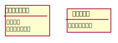

コアルール¶
コアルールでは、ターン制ゲームに適用できる割込み処理についてルールを定義します。
コアルールは、次の図を中心に説明します。(coreflow-1)
詳細は後ほど説明しますが、ゲーム開始から勝敗が決まるまでこの図に集約して説明します。
登場する用語はゲームに合わせて変更してください。
まず、ターン等の用語について説明します。
![@startuml
(*) --> "[1]ゲーム開始"
--> "[2]ターンプレイヤーにチャンスを移動"
-->"[3]ステージが空か？"
if "" then
-->[YES] "(4)パス名簿リセット"
--> "[5]アクション起こす"
--> "[6]即時効果か？"
if "" then
-->[YES] "(7)効果解決"
--> "[8]勝敗判定"
--> "[10]誘発チェック"
else
-->[NO] "[9]ステージに追加"
--> "[10]誘発チェック"
endif
--> "[3]ステージが空か？"
else
-->[NO] "[11]アクションを起こすか？"
if "" then
-->[YES] "[4]パス名簿リセット"
else
--> [NO] "[12]パス名簿に登録"
--> "[13]パス名簿の件数=プレイヤー数か？"
if "" then
-->[YES] ”[14]ステージから取出し”
--> "[7]効果解決"
else
--> [NO] "[15]チャンス移動"
--> "[3]ステージが空か？"
endif
endif
endif
@enduml](../_images/plantuml-a9a3274db53de589cea7114f13b676cbeb24fbb4.svg)
コアフロー¶
ターン¶
このルールを説明する上でターンとは、ターンは持つことができるものとします。 ターンを持っているプレイヤーは先に行動することができます。 ターンを持っているプレイヤーをターンプレイヤーといいます。
アクション¶
アクションとは、プレイヤーの行動を示します。 ターン制のゲームでは、プレイヤーは様々な行動を行います。 チェスであればコマを進めたり、ババ抜きであれば隣の人からカードを引くなどがあります。 それらをアクションと定義します。
チャンス¶
アクションを起こすことができる機会をチャンスといいます。 チャンスを持っている間は何度でもアクションを起こすことができます。
ステージ¶
アクションの解決順を整理するために使う領域です。 後入れ先出し方式で最後に積まれたアクションから順に解決されていきます。
アクションの定義項目¶
アクション、チャンス、ステージについて簡単に説明しました。 これらの概念を用いて、アクションに定義する項目を説明します。
アクションは次の項目を定義する必要があります。 他の項目は具体的にアクションを定義する際に、ゲームに合わせて追加して下さい。
効果（通常効果・即時効果）
タイミング
効果¶
効果とはその効果を発揮した際に、プレイヤーが行う行動です。
効果の中には、通常効果と即時効果があります。
違いについては、図(coreflow-2)を説明する際に分岐条件として登場します。
タイミング¶
タイミングとは、アクションを起こすことができる時を示します。 タイミングには「メイン」と「クイック」の2種類あります。
- メイン
ターンプレイヤーかつステージが空の時に起こせるアクションです。
条件をまとめると次のようになります。
チャンスを持っている
自分のターン
ステージが空
- クイック
いつでも起こせるため、アクションをステージに積み重ねることができます。
条件をまとめると次のようになります。
チャンスを持っている
エンドアクションの定義¶
定義するアクションの中で最低１つは ターンを別のプレイヤーにわたす効果を定義してください。 そうしないと、ターンが別のプレイヤーに渡らす、ゲームが進行しなくなります。
課題
例を書く
アクションのコントローラー¶
アクションを起こしたプレイヤーをそのアクションのコントローラーと呼びます。 効果はこのコントローラー視点で解釈されることになります。
コンポーネント¶
ゲームにてプレイヤーが保有する駒やカードのことをコンポーネントと定義します。 コンポーネントは次の項目を持っています。
- オーナー
コンポーネントの所有者を示します。大体のトランプゲームではトランプを1セットしか用いないため無視されますが、TCGのデッキなど個人所有のものを用いるゲームでは必要な項目となります。
- コントローラー
現在そのコンポーネントを操作しているプレイヤーを示します。オーナーとコントローラーは基本同じプレイヤーが設定されますが、コントロールを奪うアクションがある場合、オーナーとコントローラーは異なります。
注釈
コンポーネントとアクションのコントローラー
コントローラーは制御している人という意味になるため、コンポーネントとアクションのコントローラー制御する対象が異なることになります。 コンポーネントとアクションの属性を次の図に示します。アクションにはオーナーがいない点が異なります。

コンポーネントとアクションの属性¶
能力¶
能力とはアクションの効果とは異なる概念で、アクションを起こすことができたり、 アクションを誘発したりすることができます。
能力を持つことができるのは、プレイヤーの他に駒やカードなどのゲームに登場するコンポーネントも持つことができます。
(ability_image)
![@startuml
skinparam defaultTextAlignment center
!define ICONURL https://raw.githubusercontent.com/tupadr3/plantuml-icon-font-sprites/v2.2.0
!includeurl ICONURL/common.puml
!includeurl ICONURL/font-awesome-5/chess_pawn.puml
FA5_CHESS_PAWN(P1C,コンポーネント)
:プレイヤー1: as Player1
:プレイヤー2: as Player2
(〇〇アクションを起こせる) as Act1 <<能力>>
(●●アクションを起こせる) as Act2 <<能力>>
(△△アクションを起こせる) as Act3 <<能力>>
Player1 ---> (Act1) : "能力"
Player1 ---> (Act2) : "能力"
P1C --> (Act3) : "能力"
Player2 ---> (Act1) : "能力"
Player1 ..> P1C : "所有"
@enduml](../_images/plantuml-976f45327f77d4f4ee1da59bff1cd262ba402df4.svg)
能力のイメージ¶
能力には、次の種類があります。
- 常在型能力
能力が有効である場合、継続的に発揮される能力
- 誘発型能力
能力が有効である間に何かの契機でアクションを起こす能力
概ねのゲームでは、 ターン終了や駒をすすめるなどのアクションが定義されています。 そして、そのアクションを起こせる能力（常在型能力）を プレイヤーは保持しています。
コアフロー¶
ここまでの説明を踏まえて、冒頭に紹介した図を説明します。(coreflow-2)
この図にゲームの開始から勝敗が決まるまでの流れが集約されいます。
コアフロー¶
- [1]ゲーム開始
先攻を決め、ゲームを始める準備を行います。
- [2]ターンプレイヤーにチャンスを移動
ターンを持っているプレイヤーにチャンスを移動します。
- [3]ステージが空か？
ステージにアクションが存在していないか判定します。
- [4]パス名簿リセット
パスしたプレイヤーを記録するパス名簿をリセットします。
- [5]アクション起こす
アクションを起こしこれからプレイヤーが行うことを宣言します。 ゲームによってアクションの起こし方は異なります。BlackPokerではアクション名を言い、コストの支払や対象を指定しアクションを起こします。 一方ババ抜きでは、隣のプレイヤーからカードを引く際に宣言せず暗黙にアクションが起きている場合もあります。
- [6]即時効果か？
起こしたアクションが即時効果か通常効果か判定します。
- [7]効果解決
アクションの効果に定義されている内容を実行します。
- [8]勝敗判定
ゲームの勝敗を判定します。判定の方法はゲームにより異なります。
- [9]ステージに追加
ステージというアクションを貯めておける領域に追加します。
- [10]誘発チェック
ここに至るまでに誘発したアクションがないかチェックします。誘発した場合、効果を解決するかスタックに追加します。詳しいフローは trigger-check を参照してください。
- [11]アクションを起こすか？
チャンスを持っているプレイヤーはアクションを起こすかを判断します。
- [12]パス名簿に登録
パスしたプレイヤーを記録するパス名簿に登録します。同じプレイヤー名は2回登録されません。
- [13]パス名簿の件数=プレイヤー数か？
パス名簿の件数がゲームに参加しているプレイヤーの数と一致しているか判定します。
- [14]ステージから取出し
最後にステージに追加されたアクションをステージから取出します。
- [15]チャンス移動
チャンスを持っているプレイヤーからチャンスを持っていないプレイヤーにチャンスを移動します。 チャンスを移動するルールはゲームによって異なります。
能力の中でも誘発型能力は、なにかをきっかけにしてアクションが起きる条件が定義されています。 誘発する条件は「〜の場合」、「〜時」などで記載されており、誘発するアクションは「〜を誘発する」と記載されています。
誘発チェックでは、誘発したアクションの効果を解決もしくは、ステージに追加します。
誘発チェックは次の図のように行います。(trigger-flow)
![@startuml
(*) --> "[10-1]誘発チェック"
if "" then
-->[YES] "[10-2]即時誘発有無判定"
if "" then
-->[YES] "[10-3]効果解決&勝敗判定"
--> "[10-4]誘発有無判定"
else
-->[NO] "[10-4]誘発有無判定"
endif
if "" then
-->[YES] "[10-5]ステージに追加"
--> "[10-1]誘発チェック"
else
-->[NO] "[10-1]誘発チェック"
endif
else
-->[NO] (*)
endif
@enduml](../_images/plantuml-a91828c766d562c760f38e1517ad1bbf09672f77.svg)
誘発チェック¶
- [10-1]誘発チェック
全てのプレイヤー、コンポーネントが持っている誘発型能力を確認し、 アクションが誘発していないか判定します。
- [10-2]即時誘発有無判定
即時効果を持つアクション誘発していないか判定します。
- [10-3]効果解決&勝敗判定
誘発した即時効果をプレイヤー毎に任意の順番で解決します。 解決するプレイヤーの順序は、 ターンプレイヤーがコントローラーとなっているアクションを全て解決してから、 ターンプレイヤー以外がコントローラーとなっているアクションを解決します。 この解決順序は、ゲームによって変更できます。
効果を解決する毎に勝敗判定を行ってください。
- [10-4]誘発有無判定
通常効果を持つアクション誘発していないか判定します。
- [10-5]ステージに追加
誘発したアクションをプレイヤー毎に任意の順番でステージに追加します。 ステージに追加するプレイヤーの順序は、 ターンプレイヤーがコントローラーとなっているアクションを全てステージに追加してから、 ターンプレイヤー以外がコントローラーとなっているアクションをステージに追加します。 この解決順序は、ゲームによって変更できます。
まとめ¶
コアルールについて説明しました。 すでにあるターン制のゲームからアクションを洗い出し、能力を整理することで割込処理を可能としゲームの新しい遊び方が見つけられます。 また、新しく作成するゲームに関してもコアルールを意識して作成することで、ルール追加がしやすいゲームが考えやすいと思います。